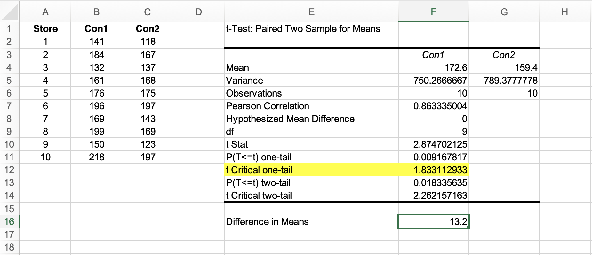
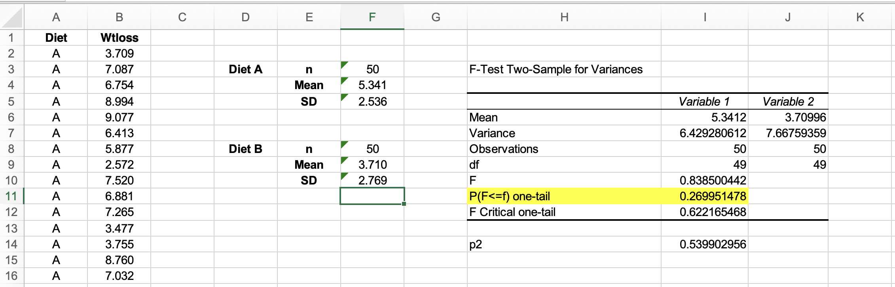

Exercises 7.1 part 1:
For this activity, we used a worksheet available from the university learning portal. It relies on Excel data to assess whether a hypothesis or claim warrants testing.
The data sheet has two columns, Con1 and Con2, which are based on the number of sold items. From there, we selected Data from the menu and then Data analysis. A new option box appears, and from the options, we selected t-Test: Paired Two Sample for Means to ensure the rights fields are chosen per the worksheet's instructions.
The data strongly indicate that the one-tailed test suggests that Con1 sold an average of 13.2 more containers per store (172.6 - 159.4 = 13.2). Results suggest a preference for Con1, with a higher significance level than before from the one-tailed test.
The related sample shows that sample t=2.875 with a df=9 (degrees of freedom)
Question: Envision conducting a one-tailed test to assess whether Filter Agent 1 is more effective. What conclusions would you reach?
The two-tailed p-value is 0.0183, which is lower than the commonly used significance level of 0.05. This leads us to reject the null hypothesis at a 5% significance level. The null hypothesis suggests that there is no significant difference between the two means. With this low p-value, the evidence supports a statistically significant difference between the two groups. The t-statistic of 2.87 surpasses the critical value of 2.26, further reinforcing our decision to reject the null hypothesis.
Exercises 7.1 part 2:
For this exercise, we followed the same rule as the preview one, but this time, it was based on which weight loss category worked better from a set of figures classed in Diet A and Diet B . Rather than selecting t-Test: Paired Two Sample for Means, the document instructed us to choose F-test Two-Sample for Variances. Once we have the field in the boxes, as per the document instruction, the output for the variance appears for the two diets.
On observation, the F ratio does not show anything noteworthy; the evidence indicates that the variances in weight loss for the two diets are assumed to be the same. The next test is to use the equal variance. Once again, following the instruction of selecting Data and then Data analysis, this time from the option, we select t-test: Two-Sample Assuming Equal Variance Once the field in the option boxes is filled out, the range is calculated as the Mean.

The Excel data indicates that the average weight reduction was greater with Diet A, which had a mean weight loss of 5.3412 kg, compared to 3.709 kg for the other diet. This results in a difference of 1.631 kg. The results suggest that Diet A is better for losing weight.
Exercises 7.2 part 5:
This exercise, which revisits the data from the first exercises, explores if the data has been distributed. The instruction file as per the previous instruction, stated the following set of instructions, from the Data bar tab select Statistic.
The Statistic option was unavailable in my Excel, so I wondered if it was hidden under Data analysis . Regrettably, it was not there either, so after doing a quick web search to find the Statistic option, only to discover the term Statistic referred to Data Analysis . The instruction asked to run a Paired t-test, which as per exercise one, the only option showing was t-Test: Paired Two Sample for Means . The result from what one can gather appears the same as exercise one.
Exercises 7.4 part 7:
For this example, a test was conducted using the following formula: “=TTEST(data1; data2; mode; type)”. The data represent the values within Excel, with the mode indicating either a (1) one-tailed test or a (2) two-tailed test. The type specifies whether it is a paired t-test (1), a variance independent t-test (2), or another variance independent t-test (3). This, in turn, returns the p-value for the chosen test.
Conducting the test with the following formula;
two-tailed =TTEST($B$2:$B$51,$B$52:$B$101,2,2) P-value
one-tailed =TTEST($B$2:$B$51,$B$52:$B$101,1,2) p-value
the results;
two-tailed 0.002751544 P-value
one-tailed 0.001375772 p-value